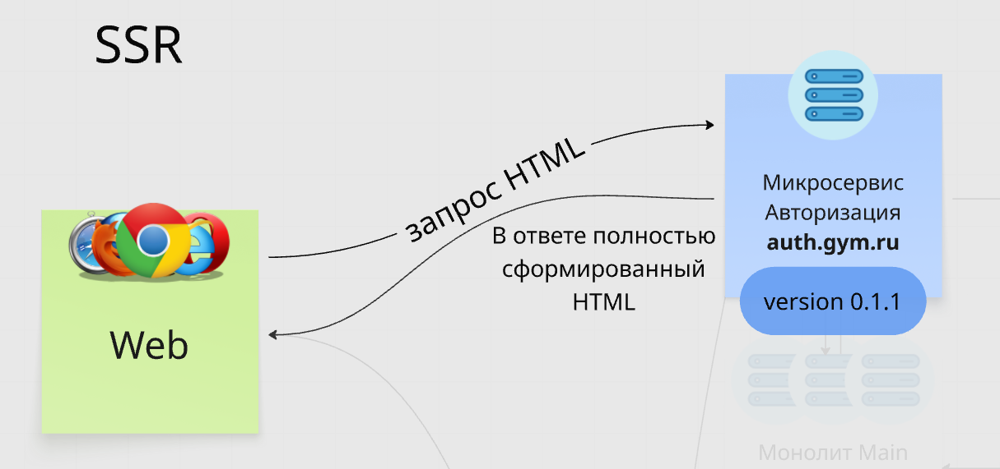
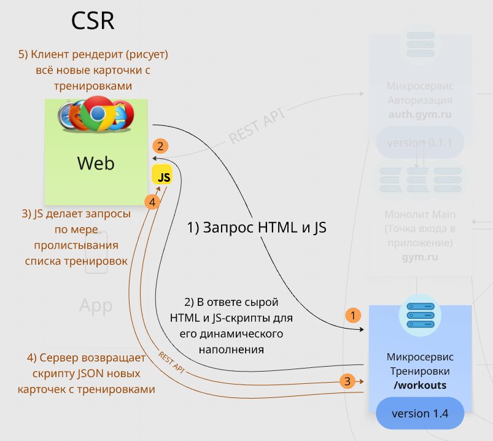

Посмотри видео про различия тонких и толстых клиентов, а затем разберемся с технологиями, отвечающими за логику работы клиента.
Сейчас встречается реализация веба как тонкого клиента, так и толстого — зависит это от количества интерактивности на вебе (скриптов и их логики на фронте). Чаще всего это именно смешанный формат, например:
– в одном эндпоинте это будет тонкий клиент (подгружается HTML с сервера и далее не меняется, например, страница контактных данных),
– в другом же эндпоинте это будет толстый клиент (подгружается HTML с сервера и JS, отвечающие за изменение DOM-дерева, например, страница с карточками товара: по раскрытию карточки товара добавляются новые HTML-элементы, а при скрытии удаляются — так обеспечивается интерактивность верстки)
Зачастую под толстыми клиентами сейчас понимают десктопные и мобильные приложения со встроенной логикой и автономностью, например, оффлайн карты или игры.
А толстые или смешанные веб-клиенты чаще называют просто смарт-клиентами, когда как устаревший полностью тонкий веб-клиент называют «тупым клиентом» (dumb client).
В жаргоне айтишников также можно слышать «жирный» клиент и «худой» клиент :)
Почитай про плюсы и минусы каждого типа.
С определениями и их отличиями разобрались, посмотрим на технологии, отвечающие за логику работы клиента: CSR (Client-Side Rendering, рендеринг на стороне клиента) и SSR (Server-Side Rendering, рендеринг на стороне сервера).

